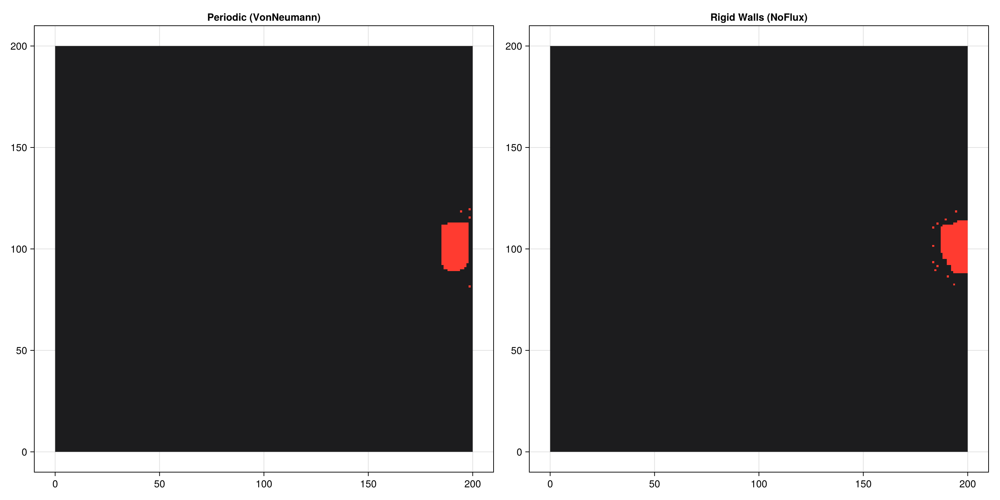

Boundary Conditions
The default periodic boundary conditions let cells wrap around the grid edges, which is appropriate for modelling bulk tissue but unsuitable for confined geometries such as a cell monolayer growing in a well or a tissue slice pressed against a rigid substrate. PottsToolkit exposes the boundary condition through the topology keyword of PottsProblem. Swapping a single type changes the behaviour of every attempted copy event at the boundary — no other code needs to change.
Packages
using PottsToolkit
using MakiePotts
using StatisticsShared model components
Both simulations use an identical energy landscape; only the topology differs.
Cell = CellType(:Cell)
Medium = CellType(:Medium, is_background = true)
sys = PottsSystem(
cell_types = [Medium, Cell],
penalties = [
VolumeComponent(
Cell => (λ = 5.0f0, target = 300),
Medium => (λ = 0.0f0, target = 0)
),
SurfaceAreaComponent(
Cell => (λ = 1.5f0, target = 70),
),
AdhesionComponent(
(Cell, Medium) => 20.0f0,
(Cell, Cell) => 4.0f0
)
]
)
alg = CheckerboardMetropolis(T = 2.0f0, sweeps_per_step = 10)CheckerboardMetropolis{MetropolisSampler, Float32, Int32}(MetropolisSampler(1.0f0), 2.0f0, 0.1f0, 10)Periodic topology (VonNeumannTopology{2})
The 4-connected periodic neighbourhood is the standard Potts topology. Cells that reach the right edge reappear on the left; top wraps to bottom. This is ideal for bulk tissue models where edge effects should not matter.
prob_periodic = PottsProblem(
sys,
HypersphereLayout(Cell, (200, 100), 20),
(200, 200);
tspan = (0, 600),
topology = VonNeumannTopology{2}()
)
sol_periodic = solve(prob_periodic, alg; saveat = 20)retcode: Success
Interpolation: No interpolation
t: 31-element Vector{Int64}:
0
20
40
60
80
100
120
140
160
180
⋮
440
460
480
500
520
540
560
580
600
u: 31-element Vector{Any}:
(grid = UInt32[0x00000000 0x00000000 … 0x00000000 0x00000000; 0x00000000 0x00000000 … 0x00000000 0x00000000; … ; 0x00000000 0x00000000 … 0x00000000 0x00000000; 0x00000000 0x00000000 … 0x00000000 0x00000000], cell_data = @NamedTuple{volumes::Int32, target_volumes::Int32, surface_areas::Int32, target_surface_areas::Int32, cell_types::UInt8, pressures::Float32, tensions::Float32, anchor_x::Float32, anchor_y::Float32, anchor_z::Float32, force_x::Float32, force_y::Float32, force_z::Float32, target_lengths::Float32, current_lengths::Float32, major_axis_x::Float32, major_axis_y::Float32, major_axis_z::Float32, length_pressures::Float32, com_acc_sin_x::Float32, com_acc_cos_x::Float32, com_acc_sin_y::Float32, com_acc_cos_y::Float32, com_acc_sin_z::Float32, com_acc_cos_z::Float32, inertia_xx::Float32, inertia_yy::Float32, inertia_zz::Float32, inertia_xy::Float32, inertia_xz::Float32, inertia_yz::Float32, volume_lambdas::Float32, surface_area_lambdas::Float32, length_lambdas::Float32, adhesion_modifiers::Float32}[(volumes = 608, target_volumes = 300, surface_areas = 118, target_surface_areas = 70, cell_types = 0x01, pressures = 0.0, tensions = 0.0, anchor_x = 191.21886, anchor_y = 100.0, anchor_z = 0.0, force_x = 0.0, force_y = 0.0, force_z = 0.0, target_lengths = 0.0, current_lengths = 0.0, major_axis_x = 0.0, major_axis_y = 0.0, major_axis_z = 0.0, length_pressures = 0.0, com_acc_sin_x = -163.47461, com_acc_cos_x = 577.4742, com_acc_sin_y = -1.513958f-5, com_acc_cos_y = -578.8607, com_acc_sin_z = 0.0, com_acc_cos_z = 0.0, inertia_xx = 0.0, inertia_yy = 0.0, inertia_zz = 0.0, inertia_xy = 0.0, inertia_xz = 0.0, inertia_yz = 0.0, volume_lambdas = 0.0, surface_area_lambdas = 0.0, length_lambdas = 0.0, adhesion_modifiers = 0.0)], N_cells = Base.RefValue{Int64}(1))
(grid = UInt32[0x00000000 0x00000000 … 0x00000000 0x00000000; 0x00000000 0x00000000 … 0x00000000 0x00000000; … ; 0x00000000 0x00000000 … 0x00000000 0x00000000; 0x00000000 0x00000000 … 0x00000000 0x00000000], cell_data = @NamedTuple{volumes::Int32, target_volumes::Int32, surface_areas::Int32, target_surface_areas::Int32, cell_types::UInt8, pressures::Float32, tensions::Float32, anchor_x::Float32, anchor_y::Float32, anchor_z::Float32, force_x::Float32, force_y::Float32, force_z::Float32, target_lengths::Float32, current_lengths::Float32, major_axis_x::Float32, major_axis_y::Float32, major_axis_z::Float32, length_pressures::Float32, com_acc_sin_x::Float32, com_acc_cos_x::Float32, com_acc_sin_y::Float32, com_acc_cos_y::Float32, com_acc_sin_z::Float32, com_acc_cos_z::Float32, inertia_xx::Float32, inertia_yy::Float32, inertia_zz::Float32, inertia_xy::Float32, inertia_xz::Float32, inertia_yz::Float32, volume_lambdas::Float32, surface_area_lambdas::Float32, length_lambdas::Float32, adhesion_modifiers::Float32}[(volumes = 300, target_volumes = 300, surface_areas = 134, target_surface_areas = 70, cell_types = 0x01, pressures = 0.0, tensions = 191.56877, anchor_x = 191.21886, anchor_y = 100.0, anchor_z = 0.0, force_x = 0.0, force_y = 0.0, force_z = 0.0, target_lengths = 0.0, current_lengths = 0.0, major_axis_x = 0.0, major_axis_y = 0.0, major_axis_z = 0.0, length_pressures = 0.0, com_acc_sin_x = -163.47461, com_acc_cos_x = 577.4742, com_acc_sin_y = -1.513958f-5, com_acc_cos_y = -578.8607, com_acc_sin_z = 0.0, com_acc_cos_z = 0.0, inertia_xx = 0.0, inertia_yy = 0.0, inertia_zz = 0.0, inertia_xy = 0.0, inertia_xz = 0.0, inertia_yz = 0.0, volume_lambdas = 0.0, surface_area_lambdas = 0.0, length_lambdas = 0.0, adhesion_modifiers = 0.0)], N_cells = Base.RefValue{Int64}(1))
(grid = UInt32[0x00000000 0x00000000 … 0x00000000 0x00000000; 0x00000000 0x00000000 … 0x00000000 0x00000000; … ; 0x00000000 0x00000000 … 0x00000000 0x00000000; 0x00000000 0x00000000 … 0x00000000 0x00000000], cell_data = @NamedTuple{volumes::Int32, target_volumes::Int32, surface_areas::Int32, target_surface_areas::Int32, cell_types::UInt8, pressures::Float32, tensions::Float32, anchor_x::Float32, anchor_y::Float32, anchor_z::Float32, force_x::Float32, force_y::Float32, force_z::Float32, target_lengths::Float32, current_lengths::Float32, major_axis_x::Float32, major_axis_y::Float32, major_axis_z::Float32, length_pressures::Float32, com_acc_sin_x::Float32, com_acc_cos_x::Float32, com_acc_sin_y::Float32, com_acc_cos_y::Float32, com_acc_sin_z::Float32, com_acc_cos_z::Float32, inertia_xx::Float32, inertia_yy::Float32, inertia_zz::Float32, inertia_xy::Float32, inertia_xz::Float32, inertia_yz::Float32, volume_lambdas::Float32, surface_area_lambdas::Float32, length_lambdas::Float32, adhesion_modifiers::Float32}[(volumes = 300, target_volumes = 300, surface_areas = 132, target_surface_areas = 70, cell_types = 0x01, pressures = 0.0, tensions = 183.24767, anchor_x = 191.21886, anchor_y = 100.0, anchor_z = 0.0, force_x = 0.0, force_y = 0.0, force_z = 0.0, target_lengths = 0.0, current_lengths = 0.0, major_axis_x = 0.0, major_axis_y = 0.0, major_axis_z = 0.0, length_pressures = 0.0, com_acc_sin_x = -163.47461, com_acc_cos_x = 577.4742, com_acc_sin_y = -1.513958f-5, com_acc_cos_y = -578.8607, com_acc_sin_z = 0.0, com_acc_cos_z = 0.0, inertia_xx = 0.0, inertia_yy = 0.0, inertia_zz = 0.0, inertia_xy = 0.0, inertia_xz = 0.0, inertia_yz = 0.0, volume_lambdas = 0.0, surface_area_lambdas = 0.0, length_lambdas = 0.0, adhesion_modifiers = 0.0)], N_cells = Base.RefValue{Int64}(1))
(grid = UInt32[0x00000000 0x00000000 … 0x00000000 0x00000000; 0x00000000 0x00000000 … 0x00000000 0x00000000; … ; 0x00000000 0x00000000 … 0x00000000 0x00000000; 0x00000000 0x00000000 … 0x00000000 0x00000000], cell_data = @NamedTuple{volumes::Int32, target_volumes::Int32, surface_areas::Int32, target_surface_areas::Int32, cell_types::UInt8, pressures::Float32, tensions::Float32, anchor_x::Float32, anchor_y::Float32, anchor_z::Float32, force_x::Float32, force_y::Float32, force_z::Float32, target_lengths::Float32, current_lengths::Float32, major_axis_x::Float32, major_axis_y::Float32, major_axis_z::Float32, length_pressures::Float32, com_acc_sin_x::Float32, com_acc_cos_x::Float32, com_acc_sin_y::Float32, com_acc_cos_y::Float32, com_acc_sin_z::Float32, com_acc_cos_z::Float32, inertia_xx::Float32, inertia_yy::Float32, inertia_zz::Float32, inertia_xy::Float32, inertia_xz::Float32, inertia_yz::Float32, volume_lambdas::Float32, surface_area_lambdas::Float32, length_lambdas::Float32, adhesion_modifiers::Float32}[(volumes = 301, target_volumes = 300, surface_areas = 122, target_surface_areas = 70, cell_types = 0x01, pressures = 0.0, tensions = 158.01369, anchor_x = 191.21886, anchor_y = 100.0, anchor_z = 0.0, force_x = 0.0, force_y = 0.0, force_z = 0.0, target_lengths = 0.0, current_lengths = 0.0, major_axis_x = 0.0, major_axis_y = 0.0, major_axis_z = 0.0, length_pressures = 0.0, com_acc_sin_x = -163.47461, com_acc_cos_x = 577.4742, com_acc_sin_y = -1.513958f-5, com_acc_cos_y = -578.8607, com_acc_sin_z = 0.0, com_acc_cos_z = 0.0, inertia_xx = 0.0, inertia_yy = 0.0, inertia_zz = 0.0, inertia_xy = 0.0, inertia_xz = 0.0, inertia_yz = 0.0, volume_lambdas = 0.0, surface_area_lambdas = 0.0, length_lambdas = 0.0, adhesion_modifiers = 0.0)], N_cells = Base.RefValue{Int64}(1))
(grid = UInt32[0x00000000 0x00000000 … 0x00000000 0x00000000; 0x00000000 0x00000000 … 0x00000000 0x00000000; … ; 0x00000000 0x00000000 … 0x00000000 0x00000000; 0x00000000 0x00000000 … 0x00000000 0x00000000], cell_data = @NamedTuple{volumes::Int32, target_volumes::Int32, surface_areas::Int32, target_surface_areas::Int32, cell_types::UInt8, pressures::Float32, tensions::Float32, anchor_x::Float32, anchor_y::Float32, anchor_z::Float32, force_x::Float32, force_y::Float32, force_z::Float32, target_lengths::Float32, current_lengths::Float32, major_axis_x::Float32, major_axis_y::Float32, major_axis_z::Float32, length_pressures::Float32, com_acc_sin_x::Float32, com_acc_cos_x::Float32, com_acc_sin_y::Float32, com_acc_cos_y::Float32, com_acc_sin_z::Float32, com_acc_cos_z::Float32, inertia_xx::Float32, inertia_yy::Float32, inertia_zz::Float32, inertia_xy::Float32, inertia_xz::Float32, inertia_yz::Float32, volume_lambdas::Float32, surface_area_lambdas::Float32, length_lambdas::Float32, adhesion_modifiers::Float32}[(volumes = 300, target_volumes = 300, surface_areas = 118, target_surface_areas = 70, cell_types = 0x01, pressures = 0.0, tensions = 139.82117, anchor_x = 191.21886, anchor_y = 100.0, anchor_z = 0.0, force_x = 0.0, force_y = 0.0, force_z = 0.0, target_lengths = 0.0, current_lengths = 0.0, major_axis_x = 0.0, major_axis_y = 0.0, major_axis_z = 0.0, length_pressures = 0.0, com_acc_sin_x = -163.47461, com_acc_cos_x = 577.4742, com_acc_sin_y = -1.513958f-5, com_acc_cos_y = -578.8607, com_acc_sin_z = 0.0, com_acc_cos_z = 0.0, inertia_xx = 0.0, inertia_yy = 0.0, inertia_zz = 0.0, inertia_xy = 0.0, inertia_xz = 0.0, inertia_yz = 0.0, volume_lambdas = 0.0, surface_area_lambdas = 0.0, length_lambdas = 0.0, adhesion_modifiers = 0.0)], N_cells = Base.RefValue{Int64}(1))
(grid = UInt32[0x00000000 0x00000000 … 0x00000000 0x00000000; 0x00000000 0x00000000 … 0x00000000 0x00000000; … ; 0x00000000 0x00000000 … 0x00000000 0x00000000; 0x00000000 0x00000000 … 0x00000000 0x00000000], cell_data = @NamedTuple{volumes::Int32, target_volumes::Int32, surface_areas::Int32, target_surface_areas::Int32, cell_types::UInt8, pressures::Float32, tensions::Float32, anchor_x::Float32, anchor_y::Float32, anchor_z::Float32, force_x::Float32, force_y::Float32, force_z::Float32, target_lengths::Float32, current_lengths::Float32, major_axis_x::Float32, major_axis_y::Float32, major_axis_z::Float32, length_pressures::Float32, com_acc_sin_x::Float32, com_acc_cos_x::Float32, com_acc_sin_y::Float32, com_acc_cos_y::Float32, com_acc_sin_z::Float32, com_acc_cos_z::Float32, inertia_xx::Float32, inertia_yy::Float32, inertia_zz::Float32, inertia_xy::Float32, inertia_xz::Float32, inertia_yz::Float32, volume_lambdas::Float32, surface_area_lambdas::Float32, length_lambdas::Float32, adhesion_modifiers::Float32}[(volumes = 300, target_volumes = 300, surface_areas = 112, target_surface_areas = 70, cell_types = 0x01, pressures = 0.0, tensions = 127.351776, anchor_x = 191.21886, anchor_y = 100.0, anchor_z = 0.0, force_x = 0.0, force_y = 0.0, force_z = 0.0, target_lengths = 0.0, current_lengths = 0.0, major_axis_x = 0.0, major_axis_y = 0.0, major_axis_z = 0.0, length_pressures = 0.0, com_acc_sin_x = -163.47461, com_acc_cos_x = 577.4742, com_acc_sin_y = -1.513958f-5, com_acc_cos_y = -578.8607, com_acc_sin_z = 0.0, com_acc_cos_z = 0.0, inertia_xx = 0.0, inertia_yy = 0.0, inertia_zz = 0.0, inertia_xy = 0.0, inertia_xz = 0.0, inertia_yz = 0.0, volume_lambdas = 0.0, surface_area_lambdas = 0.0, length_lambdas = 0.0, adhesion_modifiers = 0.0)], N_cells = Base.RefValue{Int64}(1))
(grid = UInt32[0x00000000 0x00000000 … 0x00000000 0x00000000; 0x00000000 0x00000000 … 0x00000000 0x00000000; … ; 0x00000000 0x00000000 … 0x00000000 0x00000000; 0x00000000 0x00000000 … 0x00000000 0x00000000], cell_data = @NamedTuple{volumes::Int32, target_volumes::Int32, surface_areas::Int32, target_surface_areas::Int32, cell_types::UInt8, pressures::Float32, tensions::Float32, anchor_x::Float32, anchor_y::Float32, anchor_z::Float32, force_x::Float32, force_y::Float32, force_z::Float32, target_lengths::Float32, current_lengths::Float32, major_axis_x::Float32, major_axis_y::Float32, major_axis_z::Float32, length_pressures::Float32, com_acc_sin_x::Float32, com_acc_cos_x::Float32, com_acc_sin_y::Float32, com_acc_cos_y::Float32, com_acc_sin_z::Float32, com_acc_cos_z::Float32, inertia_xx::Float32, inertia_yy::Float32, inertia_zz::Float32, inertia_xy::Float32, inertia_xz::Float32, inertia_yz::Float32, volume_lambdas::Float32, surface_area_lambdas::Float32, length_lambdas::Float32, adhesion_modifiers::Float32}[(volumes = 300, target_volumes = 300, surface_areas = 110, target_surface_areas = 70, cell_types = 0x01, pressures = 0.0, tensions = 119.53913, anchor_x = 191.21886, anchor_y = 100.0, anchor_z = 0.0, force_x = 0.0, force_y = 0.0, force_z = 0.0, target_lengths = 0.0, current_lengths = 0.0, major_axis_x = 0.0, major_axis_y = 0.0, major_axis_z = 0.0, length_pressures = 0.0, com_acc_sin_x = -163.47461, com_acc_cos_x = 577.4742, com_acc_sin_y = -1.513958f-5, com_acc_cos_y = -578.8607, com_acc_sin_z = 0.0, com_acc_cos_z = 0.0, inertia_xx = 0.0, inertia_yy = 0.0, inertia_zz = 0.0, inertia_xy = 0.0, inertia_xz = 0.0, inertia_yz = 0.0, volume_lambdas = 0.0, surface_area_lambdas = 0.0, length_lambdas = 0.0, adhesion_modifiers = 0.0)], N_cells = Base.RefValue{Int64}(1))
(grid = UInt32[0x00000000 0x00000000 … 0x00000000 0x00000000; 0x00000000 0x00000000 … 0x00000000 0x00000000; … ; 0x00000000 0x00000000 … 0x00000000 0x00000000; 0x00000000 0x00000000 … 0x00000000 0x00000000], cell_data = @NamedTuple{volumes::Int32, target_volumes::Int32, surface_areas::Int32, target_surface_areas::Int32, cell_types::UInt8, pressures::Float32, tensions::Float32, anchor_x::Float32, anchor_y::Float32, anchor_z::Float32, force_x::Float32, force_y::Float32, force_z::Float32, target_lengths::Float32, current_lengths::Float32, major_axis_x::Float32, major_axis_y::Float32, major_axis_z::Float32, length_pressures::Float32, com_acc_sin_x::Float32, com_acc_cos_x::Float32, com_acc_sin_y::Float32, com_acc_cos_y::Float32, com_acc_sin_z::Float32, com_acc_cos_z::Float32, inertia_xx::Float32, inertia_yy::Float32, inertia_zz::Float32, inertia_xy::Float32, inertia_xz::Float32, inertia_yz::Float32, volume_lambdas::Float32, surface_area_lambdas::Float32, length_lambdas::Float32, adhesion_modifiers::Float32}[(volumes = 300, target_volumes = 300, surface_areas = 110, target_surface_areas = 70, cell_types = 0x01, pressures = 0.0, tensions = 121.814644, anchor_x = 191.21886, anchor_y = 100.0, anchor_z = 0.0, force_x = 0.0, force_y = 0.0, force_z = 0.0, target_lengths = 0.0, current_lengths = 0.0, major_axis_x = 0.0, major_axis_y = 0.0, major_axis_z = 0.0, length_pressures = 0.0, com_acc_sin_x = -163.47461, com_acc_cos_x = 577.4742, com_acc_sin_y = -1.513958f-5, com_acc_cos_y = -578.8607, com_acc_sin_z = 0.0, com_acc_cos_z = 0.0, inertia_xx = 0.0, inertia_yy = 0.0, inertia_zz = 0.0, inertia_xy = 0.0, inertia_xz = 0.0, inertia_yz = 0.0, volume_lambdas = 0.0, surface_area_lambdas = 0.0, length_lambdas = 0.0, adhesion_modifiers = 0.0)], N_cells = Base.RefValue{Int64}(1))
(grid = UInt32[0x00000000 0x00000000 … 0x00000000 0x00000000; 0x00000000 0x00000000 … 0x00000000 0x00000000; … ; 0x00000000 0x00000000 … 0x00000000 0x00000000; 0x00000000 0x00000000 … 0x00000000 0x00000000], cell_data = @NamedTuple{volumes::Int32, target_volumes::Int32, surface_areas::Int32, target_surface_areas::Int32, cell_types::UInt8, pressures::Float32, tensions::Float32, anchor_x::Float32, anchor_y::Float32, anchor_z::Float32, force_x::Float32, force_y::Float32, force_z::Float32, target_lengths::Float32, current_lengths::Float32, major_axis_x::Float32, major_axis_y::Float32, major_axis_z::Float32, length_pressures::Float32, com_acc_sin_x::Float32, com_acc_cos_x::Float32, com_acc_sin_y::Float32, com_acc_cos_y::Float32, com_acc_sin_z::Float32, com_acc_cos_z::Float32, inertia_xx::Float32, inertia_yy::Float32, inertia_zz::Float32, inertia_xy::Float32, inertia_xz::Float32, inertia_yz::Float32, volume_lambdas::Float32, surface_area_lambdas::Float32, length_lambdas::Float32, adhesion_modifiers::Float32}[(volumes = 300, target_volumes = 300, surface_areas = 108, target_surface_areas = 70, cell_types = 0x01, pressures = 0.0, tensions = 112.794655, anchor_x = 191.21886, anchor_y = 100.0, anchor_z = 0.0, force_x = 0.0, force_y = 0.0, force_z = 0.0, target_lengths = 0.0, current_lengths = 0.0, major_axis_x = 0.0, major_axis_y = 0.0, major_axis_z = 0.0, length_pressures = 0.0, com_acc_sin_x = -163.47461, com_acc_cos_x = 577.4742, com_acc_sin_y = -1.513958f-5, com_acc_cos_y = -578.8607, com_acc_sin_z = 0.0, com_acc_cos_z = 0.0, inertia_xx = 0.0, inertia_yy = 0.0, inertia_zz = 0.0, inertia_xy = 0.0, inertia_xz = 0.0, inertia_yz = 0.0, volume_lambdas = 0.0, surface_area_lambdas = 0.0, length_lambdas = 0.0, adhesion_modifiers = 0.0)], N_cells = Base.RefValue{Int64}(1))
(grid = UInt32[0x00000000 0x00000000 … 0x00000000 0x00000000; 0x00000000 0x00000000 … 0x00000000 0x00000000; … ; 0x00000000 0x00000000 … 0x00000000 0x00000000; 0x00000000 0x00000000 … 0x00000000 0x00000000], cell_data = @NamedTuple{volumes::Int32, target_volumes::Int32, surface_areas::Int32, target_surface_areas::Int32, cell_types::UInt8, pressures::Float32, tensions::Float32, anchor_x::Float32, anchor_y::Float32, anchor_z::Float32, force_x::Float32, force_y::Float32, force_z::Float32, target_lengths::Float32, current_lengths::Float32, major_axis_x::Float32, major_axis_y::Float32, major_axis_z::Float32, length_pressures::Float32, com_acc_sin_x::Float32, com_acc_cos_x::Float32, com_acc_sin_y::Float32, com_acc_cos_y::Float32, com_acc_sin_z::Float32, com_acc_cos_z::Float32, inertia_xx::Float32, inertia_yy::Float32, inertia_zz::Float32, inertia_xy::Float32, inertia_xz::Float32, inertia_yz::Float32, volume_lambdas::Float32, surface_area_lambdas::Float32, length_lambdas::Float32, adhesion_modifiers::Float32}[(volumes = 300, target_volumes = 300, surface_areas = 108, target_surface_areas = 70, cell_types = 0x01, pressures = 0.0, tensions = 112.02416, anchor_x = 191.21886, anchor_y = 100.0, anchor_z = 0.0, force_x = 0.0, force_y = 0.0, force_z = 0.0, target_lengths = 0.0, current_lengths = 0.0, major_axis_x = 0.0, major_axis_y = 0.0, major_axis_z = 0.0, length_pressures = 0.0, com_acc_sin_x = -163.47461, com_acc_cos_x = 577.4742, com_acc_sin_y = -1.513958f-5, com_acc_cos_y = -578.8607, com_acc_sin_z = 0.0, com_acc_cos_z = 0.0, inertia_xx = 0.0, inertia_yy = 0.0, inertia_zz = 0.0, inertia_xy = 0.0, inertia_xz = 0.0, inertia_yz = 0.0, volume_lambdas = 0.0, surface_area_lambdas = 0.0, length_lambdas = 0.0, adhesion_modifiers = 0.0)], N_cells = Base.RefValue{Int64}(1))
⋮
(grid = UInt32[0x00000000 0x00000000 … 0x00000000 0x00000000; 0x00000000 0x00000000 … 0x00000000 0x00000000; … ; 0x00000000 0x00000000 … 0x00000000 0x00000000; 0x00000000 0x00000000 … 0x00000000 0x00000000], cell_data = @NamedTuple{volumes::Int32, target_volumes::Int32, surface_areas::Int32, target_surface_areas::Int32, cell_types::UInt8, pressures::Float32, tensions::Float32, anchor_x::Float32, anchor_y::Float32, anchor_z::Float32, force_x::Float32, force_y::Float32, force_z::Float32, target_lengths::Float32, current_lengths::Float32, major_axis_x::Float32, major_axis_y::Float32, major_axis_z::Float32, length_pressures::Float32, com_acc_sin_x::Float32, com_acc_cos_x::Float32, com_acc_sin_y::Float32, com_acc_cos_y::Float32, com_acc_sin_z::Float32, com_acc_cos_z::Float32, inertia_xx::Float32, inertia_yy::Float32, inertia_zz::Float32, inertia_xy::Float32, inertia_xz::Float32, inertia_yz::Float32, volume_lambdas::Float32, surface_area_lambdas::Float32, length_lambdas::Float32, adhesion_modifiers::Float32}[(volumes = 300, target_volumes = 300, surface_areas = 90, target_surface_areas = 70, cell_types = 0x01, pressures = 0.0, tensions = 60.0087, anchor_x = 191.21886, anchor_y = 100.0, anchor_z = 0.0, force_x = 0.0, force_y = 0.0, force_z = 0.0, target_lengths = 0.0, current_lengths = 0.0, major_axis_x = 0.0, major_axis_y = 0.0, major_axis_z = 0.0, length_pressures = 0.0, com_acc_sin_x = -163.47461, com_acc_cos_x = 577.4742, com_acc_sin_y = -1.513958f-5, com_acc_cos_y = -578.8607, com_acc_sin_z = 0.0, com_acc_cos_z = 0.0, inertia_xx = 0.0, inertia_yy = 0.0, inertia_zz = 0.0, inertia_xy = 0.0, inertia_xz = 0.0, inertia_yz = 0.0, volume_lambdas = 0.0, surface_area_lambdas = 0.0, length_lambdas = 0.0, adhesion_modifiers = 0.0)], N_cells = Base.RefValue{Int64}(1))
(grid = UInt32[0x00000000 0x00000000 … 0x00000000 0x00000000; 0x00000000 0x00000000 … 0x00000000 0x00000000; … ; 0x00000000 0x00000000 … 0x00000000 0x00000000; 0x00000000 0x00000000 … 0x00000000 0x00000000], cell_data = @NamedTuple{volumes::Int32, target_volumes::Int32, surface_areas::Int32, target_surface_areas::Int32, cell_types::UInt8, pressures::Float32, tensions::Float32, anchor_x::Float32, anchor_y::Float32, anchor_z::Float32, force_x::Float32, force_y::Float32, force_z::Float32, target_lengths::Float32, current_lengths::Float32, major_axis_x::Float32, major_axis_y::Float32, major_axis_z::Float32, length_pressures::Float32, com_acc_sin_x::Float32, com_acc_cos_x::Float32, com_acc_sin_y::Float32, com_acc_cos_y::Float32, com_acc_sin_z::Float32, com_acc_cos_z::Float32, inertia_xx::Float32, inertia_yy::Float32, inertia_zz::Float32, inertia_xy::Float32, inertia_xz::Float32, inertia_yz::Float32, volume_lambdas::Float32, surface_area_lambdas::Float32, length_lambdas::Float32, adhesion_modifiers::Float32}[(volumes = 300, target_volumes = 300, surface_areas = 90, target_surface_areas = 70, cell_types = 0x01, pressures = 0.0, tensions = 59.507637, anchor_x = 191.21886, anchor_y = 100.0, anchor_z = 0.0, force_x = 0.0, force_y = 0.0, force_z = 0.0, target_lengths = 0.0, current_lengths = 0.0, major_axis_x = 0.0, major_axis_y = 0.0, major_axis_z = 0.0, length_pressures = 0.0, com_acc_sin_x = -163.47461, com_acc_cos_x = 577.4742, com_acc_sin_y = -1.513958f-5, com_acc_cos_y = -578.8607, com_acc_sin_z = 0.0, com_acc_cos_z = 0.0, inertia_xx = 0.0, inertia_yy = 0.0, inertia_zz = 0.0, inertia_xy = 0.0, inertia_xz = 0.0, inertia_yz = 0.0, volume_lambdas = 0.0, surface_area_lambdas = 0.0, length_lambdas = 0.0, adhesion_modifiers = 0.0)], N_cells = Base.RefValue{Int64}(1))
(grid = UInt32[0x00000000 0x00000000 … 0x00000000 0x00000000; 0x00000000 0x00000000 … 0x00000000 0x00000000; … ; 0x00000000 0x00000000 … 0x00000000 0x00000000; 0x00000000 0x00000000 … 0x00000000 0x00000000], cell_data = @NamedTuple{volumes::Int32, target_volumes::Int32, surface_areas::Int32, target_surface_areas::Int32, cell_types::UInt8, pressures::Float32, tensions::Float32, anchor_x::Float32, anchor_y::Float32, anchor_z::Float32, force_x::Float32, force_y::Float32, force_z::Float32, target_lengths::Float32, current_lengths::Float32, major_axis_x::Float32, major_axis_y::Float32, major_axis_z::Float32, length_pressures::Float32, com_acc_sin_x::Float32, com_acc_cos_x::Float32, com_acc_sin_y::Float32, com_acc_cos_y::Float32, com_acc_sin_z::Float32, com_acc_cos_z::Float32, inertia_xx::Float32, inertia_yy::Float32, inertia_zz::Float32, inertia_xy::Float32, inertia_xz::Float32, inertia_yz::Float32, volume_lambdas::Float32, surface_area_lambdas::Float32, length_lambdas::Float32, adhesion_modifiers::Float32}[(volumes = 300, target_volumes = 300, surface_areas = 90, target_surface_areas = 70, cell_types = 0x01, pressures = 0.0, tensions = 60.607258, anchor_x = 191.21886, anchor_y = 100.0, anchor_z = 0.0, force_x = 0.0, force_y = 0.0, force_z = 0.0, target_lengths = 0.0, current_lengths = 0.0, major_axis_x = 0.0, major_axis_y = 0.0, major_axis_z = 0.0, length_pressures = 0.0, com_acc_sin_x = -163.47461, com_acc_cos_x = 577.4742, com_acc_sin_y = -1.513958f-5, com_acc_cos_y = -578.8607, com_acc_sin_z = 0.0, com_acc_cos_z = 0.0, inertia_xx = 0.0, inertia_yy = 0.0, inertia_zz = 0.0, inertia_xy = 0.0, inertia_xz = 0.0, inertia_yz = 0.0, volume_lambdas = 0.0, surface_area_lambdas = 0.0, length_lambdas = 0.0, adhesion_modifiers = 0.0)], N_cells = Base.RefValue{Int64}(1))
(grid = UInt32[0x00000000 0x00000000 … 0x00000000 0x00000000; 0x00000000 0x00000000 … 0x00000000 0x00000000; … ; 0x00000000 0x00000000 … 0x00000000 0x00000000; 0x00000000 0x00000000 … 0x00000000 0x00000000], cell_data = @NamedTuple{volumes::Int32, target_volumes::Int32, surface_areas::Int32, target_surface_areas::Int32, cell_types::UInt8, pressures::Float32, tensions::Float32, anchor_x::Float32, anchor_y::Float32, anchor_z::Float32, force_x::Float32, force_y::Float32, force_z::Float32, target_lengths::Float32, current_lengths::Float32, major_axis_x::Float32, major_axis_y::Float32, major_axis_z::Float32, length_pressures::Float32, com_acc_sin_x::Float32, com_acc_cos_x::Float32, com_acc_sin_y::Float32, com_acc_cos_y::Float32, com_acc_sin_z::Float32, com_acc_cos_z::Float32, inertia_xx::Float32, inertia_yy::Float32, inertia_zz::Float32, inertia_xy::Float32, inertia_xz::Float32, inertia_yz::Float32, volume_lambdas::Float32, surface_area_lambdas::Float32, length_lambdas::Float32, adhesion_modifiers::Float32}[(volumes = 299, target_volumes = 300, surface_areas = 90, target_surface_areas = 70, cell_types = 0x01, pressures = 0.0, tensions = 59.11832, anchor_x = 191.21886, anchor_y = 100.0, anchor_z = 0.0, force_x = 0.0, force_y = 0.0, force_z = 0.0, target_lengths = 0.0, current_lengths = 0.0, major_axis_x = 0.0, major_axis_y = 0.0, major_axis_z = 0.0, length_pressures = 0.0, com_acc_sin_x = -163.47461, com_acc_cos_x = 577.4742, com_acc_sin_y = -1.513958f-5, com_acc_cos_y = -578.8607, com_acc_sin_z = 0.0, com_acc_cos_z = 0.0, inertia_xx = 0.0, inertia_yy = 0.0, inertia_zz = 0.0, inertia_xy = 0.0, inertia_xz = 0.0, inertia_yz = 0.0, volume_lambdas = 0.0, surface_area_lambdas = 0.0, length_lambdas = 0.0, adhesion_modifiers = 0.0)], N_cells = Base.RefValue{Int64}(1))
(grid = UInt32[0x00000000 0x00000000 … 0x00000000 0x00000000; 0x00000000 0x00000000 … 0x00000000 0x00000000; … ; 0x00000000 0x00000000 … 0x00000000 0x00000000; 0x00000000 0x00000000 … 0x00000000 0x00000000], cell_data = @NamedTuple{volumes::Int32, target_volumes::Int32, surface_areas::Int32, target_surface_areas::Int32, cell_types::UInt8, pressures::Float32, tensions::Float32, anchor_x::Float32, anchor_y::Float32, anchor_z::Float32, force_x::Float32, force_y::Float32, force_z::Float32, target_lengths::Float32, current_lengths::Float32, major_axis_x::Float32, major_axis_y::Float32, major_axis_z::Float32, length_pressures::Float32, com_acc_sin_x::Float32, com_acc_cos_x::Float32, com_acc_sin_y::Float32, com_acc_cos_y::Float32, com_acc_sin_z::Float32, com_acc_cos_z::Float32, inertia_xx::Float32, inertia_yy::Float32, inertia_zz::Float32, inertia_xy::Float32, inertia_xz::Float32, inertia_yz::Float32, volume_lambdas::Float32, surface_area_lambdas::Float32, length_lambdas::Float32, adhesion_modifiers::Float32}[(volumes = 300, target_volumes = 300, surface_areas = 90, target_surface_areas = 70, cell_types = 0x01, pressures = 0.0, tensions = 57.788734, anchor_x = 191.21886, anchor_y = 100.0, anchor_z = 0.0, force_x = 0.0, force_y = 0.0, force_z = 0.0, target_lengths = 0.0, current_lengths = 0.0, major_axis_x = 0.0, major_axis_y = 0.0, major_axis_z = 0.0, length_pressures = 0.0, com_acc_sin_x = -163.47461, com_acc_cos_x = 577.4742, com_acc_sin_y = -1.513958f-5, com_acc_cos_y = -578.8607, com_acc_sin_z = 0.0, com_acc_cos_z = 0.0, inertia_xx = 0.0, inertia_yy = 0.0, inertia_zz = 0.0, inertia_xy = 0.0, inertia_xz = 0.0, inertia_yz = 0.0, volume_lambdas = 0.0, surface_area_lambdas = 0.0, length_lambdas = 0.0, adhesion_modifiers = 0.0)], N_cells = Base.RefValue{Int64}(1))
(grid = UInt32[0x00000000 0x00000000 … 0x00000000 0x00000000; 0x00000000 0x00000000 … 0x00000000 0x00000000; … ; 0x00000000 0x00000000 … 0x00000000 0x00000000; 0x00000000 0x00000000 … 0x00000000 0x00000000], cell_data = @NamedTuple{volumes::Int32, target_volumes::Int32, surface_areas::Int32, target_surface_areas::Int32, cell_types::UInt8, pressures::Float32, tensions::Float32, anchor_x::Float32, anchor_y::Float32, anchor_z::Float32, force_x::Float32, force_y::Float32, force_z::Float32, target_lengths::Float32, current_lengths::Float32, major_axis_x::Float32, major_axis_y::Float32, major_axis_z::Float32, length_pressures::Float32, com_acc_sin_x::Float32, com_acc_cos_x::Float32, com_acc_sin_y::Float32, com_acc_cos_y::Float32, com_acc_sin_z::Float32, com_acc_cos_z::Float32, inertia_xx::Float32, inertia_yy::Float32, inertia_zz::Float32, inertia_xy::Float32, inertia_xz::Float32, inertia_yz::Float32, volume_lambdas::Float32, surface_area_lambdas::Float32, length_lambdas::Float32, adhesion_modifiers::Float32}[(volumes = 300, target_volumes = 300, surface_areas = 90, target_surface_areas = 70, cell_types = 0x01, pressures = 0.0, tensions = 57.06662, anchor_x = 191.21886, anchor_y = 100.0, anchor_z = 0.0, force_x = 0.0, force_y = 0.0, force_z = 0.0, target_lengths = 0.0, current_lengths = 0.0, major_axis_x = 0.0, major_axis_y = 0.0, major_axis_z = 0.0, length_pressures = 0.0, com_acc_sin_x = -163.47461, com_acc_cos_x = 577.4742, com_acc_sin_y = -1.513958f-5, com_acc_cos_y = -578.8607, com_acc_sin_z = 0.0, com_acc_cos_z = 0.0, inertia_xx = 0.0, inertia_yy = 0.0, inertia_zz = 0.0, inertia_xy = 0.0, inertia_xz = 0.0, inertia_yz = 0.0, volume_lambdas = 0.0, surface_area_lambdas = 0.0, length_lambdas = 0.0, adhesion_modifiers = 0.0)], N_cells = Base.RefValue{Int64}(1))
(grid = UInt32[0x00000000 0x00000000 … 0x00000000 0x00000000; 0x00000000 0x00000000 … 0x00000000 0x00000000; … ; 0x00000000 0x00000000 … 0x00000000 0x00000000; 0x00000000 0x00000000 … 0x00000000 0x00000000], cell_data = @NamedTuple{volumes::Int32, target_volumes::Int32, surface_areas::Int32, target_surface_areas::Int32, cell_types::UInt8, pressures::Float32, tensions::Float32, anchor_x::Float32, anchor_y::Float32, anchor_z::Float32, force_x::Float32, force_y::Float32, force_z::Float32, target_lengths::Float32, current_lengths::Float32, major_axis_x::Float32, major_axis_y::Float32, major_axis_z::Float32, length_pressures::Float32, com_acc_sin_x::Float32, com_acc_cos_x::Float32, com_acc_sin_y::Float32, com_acc_cos_y::Float32, com_acc_sin_z::Float32, com_acc_cos_z::Float32, inertia_xx::Float32, inertia_yy::Float32, inertia_zz::Float32, inertia_xy::Float32, inertia_xz::Float32, inertia_yz::Float32, volume_lambdas::Float32, surface_area_lambdas::Float32, length_lambdas::Float32, adhesion_modifiers::Float32}[(volumes = 299, target_volumes = 300, surface_areas = 90, target_surface_areas = 70, cell_types = 0x01, pressures = 0.0, tensions = 61.85292, anchor_x = 191.21886, anchor_y = 100.0, anchor_z = 0.0, force_x = 0.0, force_y = 0.0, force_z = 0.0, target_lengths = 0.0, current_lengths = 0.0, major_axis_x = 0.0, major_axis_y = 0.0, major_axis_z = 0.0, length_pressures = 0.0, com_acc_sin_x = -163.47461, com_acc_cos_x = 577.4742, com_acc_sin_y = -1.513958f-5, com_acc_cos_y = -578.8607, com_acc_sin_z = 0.0, com_acc_cos_z = 0.0, inertia_xx = 0.0, inertia_yy = 0.0, inertia_zz = 0.0, inertia_xy = 0.0, inertia_xz = 0.0, inertia_yz = 0.0, volume_lambdas = 0.0, surface_area_lambdas = 0.0, length_lambdas = 0.0, adhesion_modifiers = 0.0)], N_cells = Base.RefValue{Int64}(1))
(grid = UInt32[0x00000000 0x00000000 … 0x00000000 0x00000000; 0x00000000 0x00000000 … 0x00000000 0x00000000; … ; 0x00000000 0x00000000 … 0x00000000 0x00000000; 0x00000000 0x00000000 … 0x00000000 0x00000000], cell_data = @NamedTuple{volumes::Int32, target_volumes::Int32, surface_areas::Int32, target_surface_areas::Int32, cell_types::UInt8, pressures::Float32, tensions::Float32, anchor_x::Float32, anchor_y::Float32, anchor_z::Float32, force_x::Float32, force_y::Float32, force_z::Float32, target_lengths::Float32, current_lengths::Float32, major_axis_x::Float32, major_axis_y::Float32, major_axis_z::Float32, length_pressures::Float32, com_acc_sin_x::Float32, com_acc_cos_x::Float32, com_acc_sin_y::Float32, com_acc_cos_y::Float32, com_acc_sin_z::Float32, com_acc_cos_z::Float32, inertia_xx::Float32, inertia_yy::Float32, inertia_zz::Float32, inertia_xy::Float32, inertia_xz::Float32, inertia_yz::Float32, volume_lambdas::Float32, surface_area_lambdas::Float32, length_lambdas::Float32, adhesion_modifiers::Float32}[(volumes = 300, target_volumes = 300, surface_areas = 90, target_surface_areas = 70, cell_types = 0x01, pressures = 0.0, tensions = 59.13564, anchor_x = 191.21886, anchor_y = 100.0, anchor_z = 0.0, force_x = 0.0, force_y = 0.0, force_z = 0.0, target_lengths = 0.0, current_lengths = 0.0, major_axis_x = 0.0, major_axis_y = 0.0, major_axis_z = 0.0, length_pressures = 0.0, com_acc_sin_x = -163.47461, com_acc_cos_x = 577.4742, com_acc_sin_y = -1.513958f-5, com_acc_cos_y = -578.8607, com_acc_sin_z = 0.0, com_acc_cos_z = 0.0, inertia_xx = 0.0, inertia_yy = 0.0, inertia_zz = 0.0, inertia_xy = 0.0, inertia_xz = 0.0, inertia_yz = 0.0, volume_lambdas = 0.0, surface_area_lambdas = 0.0, length_lambdas = 0.0, adhesion_modifiers = 0.0)], N_cells = Base.RefValue{Int64}(1))
(grid = UInt32[0x00000000 0x00000000 … 0x00000000 0x00000000; 0x00000000 0x00000000 … 0x00000000 0x00000000; … ; 0x00000000 0x00000000 … 0x00000000 0x00000000; 0x00000000 0x00000000 … 0x00000000 0x00000000], cell_data = @NamedTuple{volumes::Int32, target_volumes::Int32, surface_areas::Int32, target_surface_areas::Int32, cell_types::UInt8, pressures::Float32, tensions::Float32, anchor_x::Float32, anchor_y::Float32, anchor_z::Float32, force_x::Float32, force_y::Float32, force_z::Float32, target_lengths::Float32, current_lengths::Float32, major_axis_x::Float32, major_axis_y::Float32, major_axis_z::Float32, length_pressures::Float32, com_acc_sin_x::Float32, com_acc_cos_x::Float32, com_acc_sin_y::Float32, com_acc_cos_y::Float32, com_acc_sin_z::Float32, com_acc_cos_z::Float32, inertia_xx::Float32, inertia_yy::Float32, inertia_zz::Float32, inertia_xy::Float32, inertia_xz::Float32, inertia_yz::Float32, volume_lambdas::Float32, surface_area_lambdas::Float32, length_lambdas::Float32, adhesion_modifiers::Float32}[(volumes = 300, target_volumes = 300, surface_areas = 90, target_surface_areas = 70, cell_types = 0x01, pressures = 0.0, tensions = 60.88984, anchor_x = 191.21886, anchor_y = 100.0, anchor_z = 0.0, force_x = 0.0, force_y = 0.0, force_z = 0.0, target_lengths = 0.0, current_lengths = 0.0, major_axis_x = 0.0, major_axis_y = 0.0, major_axis_z = 0.0, length_pressures = 0.0, com_acc_sin_x = -163.47461, com_acc_cos_x = 577.4742, com_acc_sin_y = -1.513958f-5, com_acc_cos_y = -578.8607, com_acc_sin_z = 0.0, com_acc_cos_z = 0.0, inertia_xx = 0.0, inertia_yy = 0.0, inertia_zz = 0.0, inertia_xy = 0.0, inertia_xz = 0.0, inertia_yz = 0.0, volume_lambdas = 0.0, surface_area_lambdas = 0.0, length_lambdas = 0.0, adhesion_modifiers = 0.0)], N_cells = Base.RefValue{Int64}(1))No-flux (rigid wall) topology (NoFluxVonNeumannTopology{2})
The no-flux topology reflects copy attempts at boundaries: a lattice site at the edge cannot copy from a site outside the grid, and copy attempts that would move a cell across the boundary are rejected. This mimics cells growing against a rigid substrate or the walls of a culture dish. Cells therefore pile up, elongate, and crowd near the walls rather than smoothly wrapping.
prob_noflux = PottsProblem(
sys,
HypersphereLayout(Cell, (200, 100), 20),
(200, 200);
tspan = (0, 600),
topology = NoFluxVonNeumannTopology{2}()
)
sol_noflux = solve(prob_noflux, alg; saveat = 20)retcode: Success
Interpolation: No interpolation
t: 31-element Vector{Int64}:
0
20
40
60
80
100
120
140
160
180
⋮
440
460
480
500
520
540
560
580
600
u: 31-element Vector{Any}:
(grid = UInt32[0x00000000 0x00000000 … 0x00000000 0x00000000; 0x00000000 0x00000000 … 0x00000000 0x00000000; … ; 0x00000000 0x00000000 … 0x00000000 0x00000000; 0x00000000 0x00000000 … 0x00000000 0x00000000], cell_data = @NamedTuple{volumes::Int32, target_volumes::Int32, surface_areas::Int32, target_surface_areas::Int32, cell_types::UInt8, pressures::Float32, tensions::Float32, anchor_x::Float32, anchor_y::Float32, anchor_z::Float32, force_x::Float32, force_y::Float32, force_z::Float32, target_lengths::Float32, current_lengths::Float32, major_axis_x::Float32, major_axis_y::Float32, major_axis_z::Float32, length_pressures::Float32, com_acc_sin_x::Float32, com_acc_cos_x::Float32, com_acc_sin_y::Float32, com_acc_cos_y::Float32, com_acc_sin_z::Float32, com_acc_cos_z::Float32, inertia_xx::Float32, inertia_yy::Float32, inertia_zz::Float32, inertia_xy::Float32, inertia_xz::Float32, inertia_yz::Float32, volume_lambdas::Float32, surface_area_lambdas::Float32, length_lambdas::Float32, adhesion_modifiers::Float32}[(volumes = 608, target_volumes = 300, surface_areas = 79, target_surface_areas = 70, cell_types = 0x01, pressures = 0.0, tensions = 0.0, anchor_x = 191.21886, anchor_y = 100.0, anchor_z = 0.0, force_x = 0.0, force_y = 0.0, force_z = 0.0, target_lengths = 0.0, current_lengths = 0.0, major_axis_x = 0.0, major_axis_y = 0.0, major_axis_z = 0.0, length_pressures = 0.0, com_acc_sin_x = -163.47461, com_acc_cos_x = 577.4742, com_acc_sin_y = -1.513958f-5, com_acc_cos_y = -578.8607, com_acc_sin_z = 0.0, com_acc_cos_z = 0.0, inertia_xx = 0.0, inertia_yy = 0.0, inertia_zz = 0.0, inertia_xy = 0.0, inertia_xz = 0.0, inertia_yz = 0.0, volume_lambdas = 0.0, surface_area_lambdas = 0.0, length_lambdas = 0.0, adhesion_modifiers = 0.0)], N_cells = Base.RefValue{Int64}(1))
(grid = UInt32[0x00000000 0x00000000 … 0x00000000 0x00000000; 0x00000000 0x00000000 … 0x00000000 0x00000000; … ; 0x00000000 0x00000000 … 0x00000000 0x00000000; 0x00000000 0x00000000 … 0x00000000 0x00000000], cell_data = @NamedTuple{volumes::Int32, target_volumes::Int32, surface_areas::Int32, target_surface_areas::Int32, cell_types::UInt8, pressures::Float32, tensions::Float32, anchor_x::Float32, anchor_y::Float32, anchor_z::Float32, force_x::Float32, force_y::Float32, force_z::Float32, target_lengths::Float32, current_lengths::Float32, major_axis_x::Float32, major_axis_y::Float32, major_axis_z::Float32, length_pressures::Float32, com_acc_sin_x::Float32, com_acc_cos_x::Float32, com_acc_sin_y::Float32, com_acc_cos_y::Float32, com_acc_sin_z::Float32, com_acc_cos_z::Float32, inertia_xx::Float32, inertia_yy::Float32, inertia_zz::Float32, inertia_xy::Float32, inertia_xz::Float32, inertia_yz::Float32, volume_lambdas::Float32, surface_area_lambdas::Float32, length_lambdas::Float32, adhesion_modifiers::Float32}[(volumes = 300, target_volumes = 300, surface_areas = 109, target_surface_areas = 70, cell_types = 0x01, pressures = 0.0, tensions = 116.57208, anchor_x = 191.21886, anchor_y = 100.0, anchor_z = 0.0, force_x = 0.0, force_y = 0.0, force_z = 0.0, target_lengths = 0.0, current_lengths = 0.0, major_axis_x = 0.0, major_axis_y = 0.0, major_axis_z = 0.0, length_pressures = 0.0, com_acc_sin_x = -163.47461, com_acc_cos_x = 577.4742, com_acc_sin_y = -1.513958f-5, com_acc_cos_y = -578.8607, com_acc_sin_z = 0.0, com_acc_cos_z = 0.0, inertia_xx = 0.0, inertia_yy = 0.0, inertia_zz = 0.0, inertia_xy = 0.0, inertia_xz = 0.0, inertia_yz = 0.0, volume_lambdas = 0.0, surface_area_lambdas = 0.0, length_lambdas = 0.0, adhesion_modifiers = 0.0)], N_cells = Base.RefValue{Int64}(1))
(grid = UInt32[0x00000000 0x00000000 … 0x00000000 0x00000000; 0x00000000 0x00000000 … 0x00000000 0x00000000; … ; 0x00000000 0x00000000 … 0x00000000 0x00000000; 0x00000000 0x00000000 … 0x00000000 0x00000000], cell_data = @NamedTuple{volumes::Int32, target_volumes::Int32, surface_areas::Int32, target_surface_areas::Int32, cell_types::UInt8, pressures::Float32, tensions::Float32, anchor_x::Float32, anchor_y::Float32, anchor_z::Float32, force_x::Float32, force_y::Float32, force_z::Float32, target_lengths::Float32, current_lengths::Float32, major_axis_x::Float32, major_axis_y::Float32, major_axis_z::Float32, length_pressures::Float32, com_acc_sin_x::Float32, com_acc_cos_x::Float32, com_acc_sin_y::Float32, com_acc_cos_y::Float32, com_acc_sin_z::Float32, com_acc_cos_z::Float32, inertia_xx::Float32, inertia_yy::Float32, inertia_zz::Float32, inertia_xy::Float32, inertia_xz::Float32, inertia_yz::Float32, volume_lambdas::Float32, surface_area_lambdas::Float32, length_lambdas::Float32, adhesion_modifiers::Float32}[(volumes = 300, target_volumes = 300, surface_areas = 109, target_surface_areas = 70, cell_types = 0x01, pressures = 0.0, tensions = 114.24768, anchor_x = 191.21886, anchor_y = 100.0, anchor_z = 0.0, force_x = 0.0, force_y = 0.0, force_z = 0.0, target_lengths = 0.0, current_lengths = 0.0, major_axis_x = 0.0, major_axis_y = 0.0, major_axis_z = 0.0, length_pressures = 0.0, com_acc_sin_x = -163.47461, com_acc_cos_x = 577.4742, com_acc_sin_y = -1.513958f-5, com_acc_cos_y = -578.8607, com_acc_sin_z = 0.0, com_acc_cos_z = 0.0, inertia_xx = 0.0, inertia_yy = 0.0, inertia_zz = 0.0, inertia_xy = 0.0, inertia_xz = 0.0, inertia_yz = 0.0, volume_lambdas = 0.0, surface_area_lambdas = 0.0, length_lambdas = 0.0, adhesion_modifiers = 0.0)], N_cells = Base.RefValue{Int64}(1))
(grid = UInt32[0x00000000 0x00000000 … 0x00000000 0x00000000; 0x00000000 0x00000000 … 0x00000000 0x00000000; … ; 0x00000000 0x00000000 … 0x00000000 0x00000000; 0x00000000 0x00000000 … 0x00000000 0x00000000], cell_data = @NamedTuple{volumes::Int32, target_volumes::Int32, surface_areas::Int32, target_surface_areas::Int32, cell_types::UInt8, pressures::Float32, tensions::Float32, anchor_x::Float32, anchor_y::Float32, anchor_z::Float32, force_x::Float32, force_y::Float32, force_z::Float32, target_lengths::Float32, current_lengths::Float32, major_axis_x::Float32, major_axis_y::Float32, major_axis_z::Float32, length_pressures::Float32, com_acc_sin_x::Float32, com_acc_cos_x::Float32, com_acc_sin_y::Float32, com_acc_cos_y::Float32, com_acc_sin_z::Float32, com_acc_cos_z::Float32, inertia_xx::Float32, inertia_yy::Float32, inertia_zz::Float32, inertia_xy::Float32, inertia_xz::Float32, inertia_yz::Float32, volume_lambdas::Float32, surface_area_lambdas::Float32, length_lambdas::Float32, adhesion_modifiers::Float32}[(volumes = 300, target_volumes = 300, surface_areas = 105, target_surface_areas = 70, cell_types = 0x01, pressures = 0.0, tensions = 107.01369, anchor_x = 191.21886, anchor_y = 100.0, anchor_z = 0.0, force_x = 0.0, force_y = 0.0, force_z = 0.0, target_lengths = 0.0, current_lengths = 0.0, major_axis_x = 0.0, major_axis_y = 0.0, major_axis_z = 0.0, length_pressures = 0.0, com_acc_sin_x = -163.47461, com_acc_cos_x = 577.4742, com_acc_sin_y = -1.513958f-5, com_acc_cos_y = -578.8607, com_acc_sin_z = 0.0, com_acc_cos_z = 0.0, inertia_xx = 0.0, inertia_yy = 0.0, inertia_zz = 0.0, inertia_xy = 0.0, inertia_xz = 0.0, inertia_yz = 0.0, volume_lambdas = 0.0, surface_area_lambdas = 0.0, length_lambdas = 0.0, adhesion_modifiers = 0.0)], N_cells = Base.RefValue{Int64}(1))
(grid = UInt32[0x00000000 0x00000000 … 0x00000000 0x00000000; 0x00000000 0x00000000 … 0x00000000 0x00000000; … ; 0x00000000 0x00000000 … 0x00000000 0x00000000; 0x00000000 0x00000000 … 0x00000000 0x00000000], cell_data = @NamedTuple{volumes::Int32, target_volumes::Int32, surface_areas::Int32, target_surface_areas::Int32, cell_types::UInt8, pressures::Float32, tensions::Float32, anchor_x::Float32, anchor_y::Float32, anchor_z::Float32, force_x::Float32, force_y::Float32, force_z::Float32, target_lengths::Float32, current_lengths::Float32, major_axis_x::Float32, major_axis_y::Float32, major_axis_z::Float32, length_pressures::Float32, com_acc_sin_x::Float32, com_acc_cos_x::Float32, com_acc_sin_y::Float32, com_acc_cos_y::Float32, com_acc_sin_z::Float32, com_acc_cos_z::Float32, inertia_xx::Float32, inertia_yy::Float32, inertia_zz::Float32, inertia_xy::Float32, inertia_xz::Float32, inertia_yz::Float32, volume_lambdas::Float32, surface_area_lambdas::Float32, length_lambdas::Float32, adhesion_modifiers::Float32}[(volumes = 300, target_volumes = 300, surface_areas = 105, target_surface_areas = 70, cell_types = 0x01, pressures = 0.0, tensions = 100.82118, anchor_x = 191.21886, anchor_y = 100.0, anchor_z = 0.0, force_x = 0.0, force_y = 0.0, force_z = 0.0, target_lengths = 0.0, current_lengths = 0.0, major_axis_x = 0.0, major_axis_y = 0.0, major_axis_z = 0.0, length_pressures = 0.0, com_acc_sin_x = -163.47461, com_acc_cos_x = 577.4742, com_acc_sin_y = -1.513958f-5, com_acc_cos_y = -578.8607, com_acc_sin_z = 0.0, com_acc_cos_z = 0.0, inertia_xx = 0.0, inertia_yy = 0.0, inertia_zz = 0.0, inertia_xy = 0.0, inertia_xz = 0.0, inertia_yz = 0.0, volume_lambdas = 0.0, surface_area_lambdas = 0.0, length_lambdas = 0.0, adhesion_modifiers = 0.0)], N_cells = Base.RefValue{Int64}(1))
(grid = UInt32[0x00000000 0x00000000 … 0x00000000 0x00000000; 0x00000000 0x00000000 … 0x00000000 0x00000000; … ; 0x00000000 0x00000000 … 0x00000000 0x00000000; 0x00000000 0x00000000 … 0x00000000 0x00000000], cell_data = @NamedTuple{volumes::Int32, target_volumes::Int32, surface_areas::Int32, target_surface_areas::Int32, cell_types::UInt8, pressures::Float32, tensions::Float32, anchor_x::Float32, anchor_y::Float32, anchor_z::Float32, force_x::Float32, force_y::Float32, force_z::Float32, target_lengths::Float32, current_lengths::Float32, major_axis_x::Float32, major_axis_y::Float32, major_axis_z::Float32, length_pressures::Float32, com_acc_sin_x::Float32, com_acc_cos_x::Float32, com_acc_sin_y::Float32, com_acc_cos_y::Float32, com_acc_sin_z::Float32, com_acc_cos_z::Float32, inertia_xx::Float32, inertia_yy::Float32, inertia_zz::Float32, inertia_xy::Float32, inertia_xz::Float32, inertia_yz::Float32, volume_lambdas::Float32, surface_area_lambdas::Float32, length_lambdas::Float32, adhesion_modifiers::Float32}[(volumes = 300, target_volumes = 300, surface_areas = 105, target_surface_areas = 70, cell_types = 0x01, pressures = 0.0, tensions = 106.351776, anchor_x = 191.21886, anchor_y = 100.0, anchor_z = 0.0, force_x = 0.0, force_y = 0.0, force_z = 0.0, target_lengths = 0.0, current_lengths = 0.0, major_axis_x = 0.0, major_axis_y = 0.0, major_axis_z = 0.0, length_pressures = 0.0, com_acc_sin_x = -163.47461, com_acc_cos_x = 577.4742, com_acc_sin_y = -1.513958f-5, com_acc_cos_y = -578.8607, com_acc_sin_z = 0.0, com_acc_cos_z = 0.0, inertia_xx = 0.0, inertia_yy = 0.0, inertia_zz = 0.0, inertia_xy = 0.0, inertia_xz = 0.0, inertia_yz = 0.0, volume_lambdas = 0.0, surface_area_lambdas = 0.0, length_lambdas = 0.0, adhesion_modifiers = 0.0)], N_cells = Base.RefValue{Int64}(1))
(grid = UInt32[0x00000000 0x00000000 … 0x00000000 0x00000000; 0x00000000 0x00000000 … 0x00000000 0x00000000; … ; 0x00000000 0x00000000 … 0x00000000 0x00000000; 0x00000000 0x00000000 … 0x00000000 0x00000000], cell_data = @NamedTuple{volumes::Int32, target_volumes::Int32, surface_areas::Int32, target_surface_areas::Int32, cell_types::UInt8, pressures::Float32, tensions::Float32, anchor_x::Float32, anchor_y::Float32, anchor_z::Float32, force_x::Float32, force_y::Float32, force_z::Float32, target_lengths::Float32, current_lengths::Float32, major_axis_x::Float32, major_axis_y::Float32, major_axis_z::Float32, length_pressures::Float32, com_acc_sin_x::Float32, com_acc_cos_x::Float32, com_acc_sin_y::Float32, com_acc_cos_y::Float32, com_acc_sin_z::Float32, com_acc_cos_z::Float32, inertia_xx::Float32, inertia_yy::Float32, inertia_zz::Float32, inertia_xy::Float32, inertia_xz::Float32, inertia_yz::Float32, volume_lambdas::Float32, surface_area_lambdas::Float32, length_lambdas::Float32, adhesion_modifiers::Float32}[(volumes = 300, target_volumes = 300, surface_areas = 105, target_surface_areas = 70, cell_types = 0x01, pressures = 0.0, tensions = 104.53913, anchor_x = 191.21886, anchor_y = 100.0, anchor_z = 0.0, force_x = 0.0, force_y = 0.0, force_z = 0.0, target_lengths = 0.0, current_lengths = 0.0, major_axis_x = 0.0, major_axis_y = 0.0, major_axis_z = 0.0, length_pressures = 0.0, com_acc_sin_x = -163.47461, com_acc_cos_x = 577.4742, com_acc_sin_y = -1.513958f-5, com_acc_cos_y = -578.8607, com_acc_sin_z = 0.0, com_acc_cos_z = 0.0, inertia_xx = 0.0, inertia_yy = 0.0, inertia_zz = 0.0, inertia_xy = 0.0, inertia_xz = 0.0, inertia_yz = 0.0, volume_lambdas = 0.0, surface_area_lambdas = 0.0, length_lambdas = 0.0, adhesion_modifiers = 0.0)], N_cells = Base.RefValue{Int64}(1))
(grid = UInt32[0x00000000 0x00000000 … 0x00000000 0x00000000; 0x00000000 0x00000000 … 0x00000000 0x00000000; … ; 0x00000000 0x00000000 … 0x00000000 0x00000000; 0x00000000 0x00000000 … 0x00000000 0x00000000], cell_data = @NamedTuple{volumes::Int32, target_volumes::Int32, surface_areas::Int32, target_surface_areas::Int32, cell_types::UInt8, pressures::Float32, tensions::Float32, anchor_x::Float32, anchor_y::Float32, anchor_z::Float32, force_x::Float32, force_y::Float32, force_z::Float32, target_lengths::Float32, current_lengths::Float32, major_axis_x::Float32, major_axis_y::Float32, major_axis_z::Float32, length_pressures::Float32, com_acc_sin_x::Float32, com_acc_cos_x::Float32, com_acc_sin_y::Float32, com_acc_cos_y::Float32, com_acc_sin_z::Float32, com_acc_cos_z::Float32, inertia_xx::Float32, inertia_yy::Float32, inertia_zz::Float32, inertia_xy::Float32, inertia_xz::Float32, inertia_yz::Float32, volume_lambdas::Float32, surface_area_lambdas::Float32, length_lambdas::Float32, adhesion_modifiers::Float32}[(volumes = 300, target_volumes = 300, surface_areas = 105, target_surface_areas = 70, cell_types = 0x01, pressures = 0.0, tensions = 106.81466, anchor_x = 191.21886, anchor_y = 100.0, anchor_z = 0.0, force_x = 0.0, force_y = 0.0, force_z = 0.0, target_lengths = 0.0, current_lengths = 0.0, major_axis_x = 0.0, major_axis_y = 0.0, major_axis_z = 0.0, length_pressures = 0.0, com_acc_sin_x = -163.47461, com_acc_cos_x = 577.4742, com_acc_sin_y = -1.513958f-5, com_acc_cos_y = -578.8607, com_acc_sin_z = 0.0, com_acc_cos_z = 0.0, inertia_xx = 0.0, inertia_yy = 0.0, inertia_zz = 0.0, inertia_xy = 0.0, inertia_xz = 0.0, inertia_yz = 0.0, volume_lambdas = 0.0, surface_area_lambdas = 0.0, length_lambdas = 0.0, adhesion_modifiers = 0.0)], N_cells = Base.RefValue{Int64}(1))
(grid = UInt32[0x00000000 0x00000000 … 0x00000000 0x00000000; 0x00000000 0x00000000 … 0x00000000 0x00000000; … ; 0x00000000 0x00000000 … 0x00000000 0x00000000; 0x00000000 0x00000000 … 0x00000000 0x00000000], cell_data = @NamedTuple{volumes::Int32, target_volumes::Int32, surface_areas::Int32, target_surface_areas::Int32, cell_types::UInt8, pressures::Float32, tensions::Float32, anchor_x::Float32, anchor_y::Float32, anchor_z::Float32, force_x::Float32, force_y::Float32, force_z::Float32, target_lengths::Float32, current_lengths::Float32, major_axis_x::Float32, major_axis_y::Float32, major_axis_z::Float32, length_pressures::Float32, com_acc_sin_x::Float32, com_acc_cos_x::Float32, com_acc_sin_y::Float32, com_acc_cos_y::Float32, com_acc_sin_z::Float32, com_acc_cos_z::Float32, inertia_xx::Float32, inertia_yy::Float32, inertia_zz::Float32, inertia_xy::Float32, inertia_xz::Float32, inertia_yz::Float32, volume_lambdas::Float32, surface_area_lambdas::Float32, length_lambdas::Float32, adhesion_modifiers::Float32}[(volumes = 300, target_volumes = 300, surface_areas = 105, target_surface_areas = 70, cell_types = 0x01, pressures = 0.0, tensions = 103.794655, anchor_x = 191.21886, anchor_y = 100.0, anchor_z = 0.0, force_x = 0.0, force_y = 0.0, force_z = 0.0, target_lengths = 0.0, current_lengths = 0.0, major_axis_x = 0.0, major_axis_y = 0.0, major_axis_z = 0.0, length_pressures = 0.0, com_acc_sin_x = -163.47461, com_acc_cos_x = 577.4742, com_acc_sin_y = -1.513958f-5, com_acc_cos_y = -578.8607, com_acc_sin_z = 0.0, com_acc_cos_z = 0.0, inertia_xx = 0.0, inertia_yy = 0.0, inertia_zz = 0.0, inertia_xy = 0.0, inertia_xz = 0.0, inertia_yz = 0.0, volume_lambdas = 0.0, surface_area_lambdas = 0.0, length_lambdas = 0.0, adhesion_modifiers = 0.0)], N_cells = Base.RefValue{Int64}(1))
(grid = UInt32[0x00000000 0x00000000 … 0x00000000 0x00000000; 0x00000000 0x00000000 … 0x00000000 0x00000000; … ; 0x00000000 0x00000000 … 0x00000000 0x00000000; 0x00000000 0x00000000 … 0x00000000 0x00000000], cell_data = @NamedTuple{volumes::Int32, target_volumes::Int32, surface_areas::Int32, target_surface_areas::Int32, cell_types::UInt8, pressures::Float32, tensions::Float32, anchor_x::Float32, anchor_y::Float32, anchor_z::Float32, force_x::Float32, force_y::Float32, force_z::Float32, target_lengths::Float32, current_lengths::Float32, major_axis_x::Float32, major_axis_y::Float32, major_axis_z::Float32, length_pressures::Float32, com_acc_sin_x::Float32, com_acc_cos_x::Float32, com_acc_sin_y::Float32, com_acc_cos_y::Float32, com_acc_sin_z::Float32, com_acc_cos_z::Float32, inertia_xx::Float32, inertia_yy::Float32, inertia_zz::Float32, inertia_xy::Float32, inertia_xz::Float32, inertia_yz::Float32, volume_lambdas::Float32, surface_area_lambdas::Float32, length_lambdas::Float32, adhesion_modifiers::Float32}[(volumes = 300, target_volumes = 300, surface_areas = 105, target_surface_areas = 70, cell_types = 0x01, pressures = 0.0, tensions = 103.02417, anchor_x = 191.21886, anchor_y = 100.0, anchor_z = 0.0, force_x = 0.0, force_y = 0.0, force_z = 0.0, target_lengths = 0.0, current_lengths = 0.0, major_axis_x = 0.0, major_axis_y = 0.0, major_axis_z = 0.0, length_pressures = 0.0, com_acc_sin_x = -163.47461, com_acc_cos_x = 577.4742, com_acc_sin_y = -1.513958f-5, com_acc_cos_y = -578.8607, com_acc_sin_z = 0.0, com_acc_cos_z = 0.0, inertia_xx = 0.0, inertia_yy = 0.0, inertia_zz = 0.0, inertia_xy = 0.0, inertia_xz = 0.0, inertia_yz = 0.0, volume_lambdas = 0.0, surface_area_lambdas = 0.0, length_lambdas = 0.0, adhesion_modifiers = 0.0)], N_cells = Base.RefValue{Int64}(1))
⋮
(grid = UInt32[0x00000000 0x00000000 … 0x00000000 0x00000000; 0x00000000 0x00000000 … 0x00000000 0x00000000; … ; 0x00000000 0x00000000 … 0x00000000 0x00000000; 0x00000000 0x00000000 … 0x00000000 0x00000000], cell_data = @NamedTuple{volumes::Int32, target_volumes::Int32, surface_areas::Int32, target_surface_areas::Int32, cell_types::UInt8, pressures::Float32, tensions::Float32, anchor_x::Float32, anchor_y::Float32, anchor_z::Float32, force_x::Float32, force_y::Float32, force_z::Float32, target_lengths::Float32, current_lengths::Float32, major_axis_x::Float32, major_axis_y::Float32, major_axis_z::Float32, length_pressures::Float32, com_acc_sin_x::Float32, com_acc_cos_x::Float32, com_acc_sin_y::Float32, com_acc_cos_y::Float32, com_acc_sin_z::Float32, com_acc_cos_z::Float32, inertia_xx::Float32, inertia_yy::Float32, inertia_zz::Float32, inertia_xy::Float32, inertia_xz::Float32, inertia_yz::Float32, volume_lambdas::Float32, surface_area_lambdas::Float32, length_lambdas::Float32, adhesion_modifiers::Float32}[(volumes = 300, target_volumes = 300, surface_areas = 105, target_surface_areas = 70, cell_types = 0x01, pressures = 0.0, tensions = 105.008705, anchor_x = 191.21886, anchor_y = 100.0, anchor_z = 0.0, force_x = 0.0, force_y = 0.0, force_z = 0.0, target_lengths = 0.0, current_lengths = 0.0, major_axis_x = 0.0, major_axis_y = 0.0, major_axis_z = 0.0, length_pressures = 0.0, com_acc_sin_x = -163.47461, com_acc_cos_x = 577.4742, com_acc_sin_y = -1.513958f-5, com_acc_cos_y = -578.8607, com_acc_sin_z = 0.0, com_acc_cos_z = 0.0, inertia_xx = 0.0, inertia_yy = 0.0, inertia_zz = 0.0, inertia_xy = 0.0, inertia_xz = 0.0, inertia_yz = 0.0, volume_lambdas = 0.0, surface_area_lambdas = 0.0, length_lambdas = 0.0, adhesion_modifiers = 0.0)], N_cells = Base.RefValue{Int64}(1))
(grid = UInt32[0x00000000 0x00000000 … 0x00000000 0x00000000; 0x00000000 0x00000000 … 0x00000000 0x00000000; … ; 0x00000000 0x00000000 … 0x00000000 0x00000000; 0x00000000 0x00000000 … 0x00000000 0x00000000], cell_data = @NamedTuple{volumes::Int32, target_volumes::Int32, surface_areas::Int32, target_surface_areas::Int32, cell_types::UInt8, pressures::Float32, tensions::Float32, anchor_x::Float32, anchor_y::Float32, anchor_z::Float32, force_x::Float32, force_y::Float32, force_z::Float32, target_lengths::Float32, current_lengths::Float32, major_axis_x::Float32, major_axis_y::Float32, major_axis_z::Float32, length_pressures::Float32, com_acc_sin_x::Float32, com_acc_cos_x::Float32, com_acc_sin_y::Float32, com_acc_cos_y::Float32, com_acc_sin_z::Float32, com_acc_cos_z::Float32, inertia_xx::Float32, inertia_yy::Float32, inertia_zz::Float32, inertia_xy::Float32, inertia_xz::Float32, inertia_yz::Float32, volume_lambdas::Float32, surface_area_lambdas::Float32, length_lambdas::Float32, adhesion_modifiers::Float32}[(volumes = 300, target_volumes = 300, surface_areas = 105, target_surface_areas = 70, cell_types = 0x01, pressures = 0.0, tensions = 104.507645, anchor_x = 191.21886, anchor_y = 100.0, anchor_z = 0.0, force_x = 0.0, force_y = 0.0, force_z = 0.0, target_lengths = 0.0, current_lengths = 0.0, major_axis_x = 0.0, major_axis_y = 0.0, major_axis_z = 0.0, length_pressures = 0.0, com_acc_sin_x = -163.47461, com_acc_cos_x = 577.4742, com_acc_sin_y = -1.513958f-5, com_acc_cos_y = -578.8607, com_acc_sin_z = 0.0, com_acc_cos_z = 0.0, inertia_xx = 0.0, inertia_yy = 0.0, inertia_zz = 0.0, inertia_xy = 0.0, inertia_xz = 0.0, inertia_yz = 0.0, volume_lambdas = 0.0, surface_area_lambdas = 0.0, length_lambdas = 0.0, adhesion_modifiers = 0.0)], N_cells = Base.RefValue{Int64}(1))
(grid = UInt32[0x00000000 0x00000000 … 0x00000000 0x00000000; 0x00000000 0x00000000 … 0x00000000 0x00000000; … ; 0x00000000 0x00000000 … 0x00000000 0x00000000; 0x00000000 0x00000000 … 0x00000000 0x00000000], cell_data = @NamedTuple{volumes::Int32, target_volumes::Int32, surface_areas::Int32, target_surface_areas::Int32, cell_types::UInt8, pressures::Float32, tensions::Float32, anchor_x::Float32, anchor_y::Float32, anchor_z::Float32, force_x::Float32, force_y::Float32, force_z::Float32, target_lengths::Float32, current_lengths::Float32, major_axis_x::Float32, major_axis_y::Float32, major_axis_z::Float32, length_pressures::Float32, com_acc_sin_x::Float32, com_acc_cos_x::Float32, com_acc_sin_y::Float32, com_acc_cos_y::Float32, com_acc_sin_z::Float32, com_acc_cos_z::Float32, inertia_xx::Float32, inertia_yy::Float32, inertia_zz::Float32, inertia_xy::Float32, inertia_xz::Float32, inertia_yz::Float32, volume_lambdas::Float32, surface_area_lambdas::Float32, length_lambdas::Float32, adhesion_modifiers::Float32}[(volumes = 300, target_volumes = 300, surface_areas = 105, target_surface_areas = 70, cell_types = 0x01, pressures = 0.0, tensions = 105.60727, anchor_x = 191.21886, anchor_y = 100.0, anchor_z = 0.0, force_x = 0.0, force_y = 0.0, force_z = 0.0, target_lengths = 0.0, current_lengths = 0.0, major_axis_x = 0.0, major_axis_y = 0.0, major_axis_z = 0.0, length_pressures = 0.0, com_acc_sin_x = -163.47461, com_acc_cos_x = 577.4742, com_acc_sin_y = -1.513958f-5, com_acc_cos_y = -578.8607, com_acc_sin_z = 0.0, com_acc_cos_z = 0.0, inertia_xx = 0.0, inertia_yy = 0.0, inertia_zz = 0.0, inertia_xy = 0.0, inertia_xz = 0.0, inertia_yz = 0.0, volume_lambdas = 0.0, surface_area_lambdas = 0.0, length_lambdas = 0.0, adhesion_modifiers = 0.0)], N_cells = Base.RefValue{Int64}(1))
(grid = UInt32[0x00000000 0x00000000 … 0x00000000 0x00000000; 0x00000000 0x00000000 … 0x00000000 0x00000000; … ; 0x00000000 0x00000000 … 0x00000000 0x00000000; 0x00000000 0x00000000 … 0x00000000 0x00000000], cell_data = @NamedTuple{volumes::Int32, target_volumes::Int32, surface_areas::Int32, target_surface_areas::Int32, cell_types::UInt8, pressures::Float32, tensions::Float32, anchor_x::Float32, anchor_y::Float32, anchor_z::Float32, force_x::Float32, force_y::Float32, force_z::Float32, target_lengths::Float32, current_lengths::Float32, major_axis_x::Float32, major_axis_y::Float32, major_axis_z::Float32, length_pressures::Float32, com_acc_sin_x::Float32, com_acc_cos_x::Float32, com_acc_sin_y::Float32, com_acc_cos_y::Float32, com_acc_sin_z::Float32, com_acc_cos_z::Float32, inertia_xx::Float32, inertia_yy::Float32, inertia_zz::Float32, inertia_xy::Float32, inertia_xz::Float32, inertia_yz::Float32, volume_lambdas::Float32, surface_area_lambdas::Float32, length_lambdas::Float32, adhesion_modifiers::Float32}[(volumes = 300, target_volumes = 300, surface_areas = 105, target_surface_areas = 70, cell_types = 0x01, pressures = 0.0, tensions = 104.118324, anchor_x = 191.21886, anchor_y = 100.0, anchor_z = 0.0, force_x = 0.0, force_y = 0.0, force_z = 0.0, target_lengths = 0.0, current_lengths = 0.0, major_axis_x = 0.0, major_axis_y = 0.0, major_axis_z = 0.0, length_pressures = 0.0, com_acc_sin_x = -163.47461, com_acc_cos_x = 577.4742, com_acc_sin_y = -1.513958f-5, com_acc_cos_y = -578.8607, com_acc_sin_z = 0.0, com_acc_cos_z = 0.0, inertia_xx = 0.0, inertia_yy = 0.0, inertia_zz = 0.0, inertia_xy = 0.0, inertia_xz = 0.0, inertia_yz = 0.0, volume_lambdas = 0.0, surface_area_lambdas = 0.0, length_lambdas = 0.0, adhesion_modifiers = 0.0)], N_cells = Base.RefValue{Int64}(1))
(grid = UInt32[0x00000000 0x00000000 … 0x00000000 0x00000000; 0x00000000 0x00000000 … 0x00000000 0x00000000; … ; 0x00000000 0x00000000 … 0x00000000 0x00000000; 0x00000000 0x00000000 … 0x00000000 0x00000000], cell_data = @NamedTuple{volumes::Int32, target_volumes::Int32, surface_areas::Int32, target_surface_areas::Int32, cell_types::UInt8, pressures::Float32, tensions::Float32, anchor_x::Float32, anchor_y::Float32, anchor_z::Float32, force_x::Float32, force_y::Float32, force_z::Float32, target_lengths::Float32, current_lengths::Float32, major_axis_x::Float32, major_axis_y::Float32, major_axis_z::Float32, length_pressures::Float32, com_acc_sin_x::Float32, com_acc_cos_x::Float32, com_acc_sin_y::Float32, com_acc_cos_y::Float32, com_acc_sin_z::Float32, com_acc_cos_z::Float32, inertia_xx::Float32, inertia_yy::Float32, inertia_zz::Float32, inertia_xy::Float32, inertia_xz::Float32, inertia_yz::Float32, volume_lambdas::Float32, surface_area_lambdas::Float32, length_lambdas::Float32, adhesion_modifiers::Float32}[(volumes = 300, target_volumes = 300, surface_areas = 105, target_surface_areas = 70, cell_types = 0x01, pressures = 0.0, tensions = 102.78874, anchor_x = 191.21886, anchor_y = 100.0, anchor_z = 0.0, force_x = 0.0, force_y = 0.0, force_z = 0.0, target_lengths = 0.0, current_lengths = 0.0, major_axis_x = 0.0, major_axis_y = 0.0, major_axis_z = 0.0, length_pressures = 0.0, com_acc_sin_x = -163.47461, com_acc_cos_x = 577.4742, com_acc_sin_y = -1.513958f-5, com_acc_cos_y = -578.8607, com_acc_sin_z = 0.0, com_acc_cos_z = 0.0, inertia_xx = 0.0, inertia_yy = 0.0, inertia_zz = 0.0, inertia_xy = 0.0, inertia_xz = 0.0, inertia_yz = 0.0, volume_lambdas = 0.0, surface_area_lambdas = 0.0, length_lambdas = 0.0, adhesion_modifiers = 0.0)], N_cells = Base.RefValue{Int64}(1))
(grid = UInt32[0x00000000 0x00000000 … 0x00000000 0x00000000; 0x00000000 0x00000000 … 0x00000000 0x00000000; … ; 0x00000000 0x00000000 … 0x00000000 0x00000000; 0x00000000 0x00000000 … 0x00000000 0x00000000], cell_data = @NamedTuple{volumes::Int32, target_volumes::Int32, surface_areas::Int32, target_surface_areas::Int32, cell_types::UInt8, pressures::Float32, tensions::Float32, anchor_x::Float32, anchor_y::Float32, anchor_z::Float32, force_x::Float32, force_y::Float32, force_z::Float32, target_lengths::Float32, current_lengths::Float32, major_axis_x::Float32, major_axis_y::Float32, major_axis_z::Float32, length_pressures::Float32, com_acc_sin_x::Float32, com_acc_cos_x::Float32, com_acc_sin_y::Float32, com_acc_cos_y::Float32, com_acc_sin_z::Float32, com_acc_cos_z::Float32, inertia_xx::Float32, inertia_yy::Float32, inertia_zz::Float32, inertia_xy::Float32, inertia_xz::Float32, inertia_yz::Float32, volume_lambdas::Float32, surface_area_lambdas::Float32, length_lambdas::Float32, adhesion_modifiers::Float32}[(volumes = 300, target_volumes = 300, surface_areas = 105, target_surface_areas = 70, cell_types = 0x01, pressures = 0.0, tensions = 102.06663, anchor_x = 191.21886, anchor_y = 100.0, anchor_z = 0.0, force_x = 0.0, force_y = 0.0, force_z = 0.0, target_lengths = 0.0, current_lengths = 0.0, major_axis_x = 0.0, major_axis_y = 0.0, major_axis_z = 0.0, length_pressures = 0.0, com_acc_sin_x = -163.47461, com_acc_cos_x = 577.4742, com_acc_sin_y = -1.513958f-5, com_acc_cos_y = -578.8607, com_acc_sin_z = 0.0, com_acc_cos_z = 0.0, inertia_xx = 0.0, inertia_yy = 0.0, inertia_zz = 0.0, inertia_xy = 0.0, inertia_xz = 0.0, inertia_yz = 0.0, volume_lambdas = 0.0, surface_area_lambdas = 0.0, length_lambdas = 0.0, adhesion_modifiers = 0.0)], N_cells = Base.RefValue{Int64}(1))
(grid = UInt32[0x00000000 0x00000000 … 0x00000000 0x00000000; 0x00000000 0x00000000 … 0x00000000 0x00000000; … ; 0x00000000 0x00000000 … 0x00000000 0x00000000; 0x00000000 0x00000000 … 0x00000000 0x00000000], cell_data = @NamedTuple{volumes::Int32, target_volumes::Int32, surface_areas::Int32, target_surface_areas::Int32, cell_types::UInt8, pressures::Float32, tensions::Float32, anchor_x::Float32, anchor_y::Float32, anchor_z::Float32, force_x::Float32, force_y::Float32, force_z::Float32, target_lengths::Float32, current_lengths::Float32, major_axis_x::Float32, major_axis_y::Float32, major_axis_z::Float32, length_pressures::Float32, com_acc_sin_x::Float32, com_acc_cos_x::Float32, com_acc_sin_y::Float32, com_acc_cos_y::Float32, com_acc_sin_z::Float32, com_acc_cos_z::Float32, inertia_xx::Float32, inertia_yy::Float32, inertia_zz::Float32, inertia_xy::Float32, inertia_xz::Float32, inertia_yz::Float32, volume_lambdas::Float32, surface_area_lambdas::Float32, length_lambdas::Float32, adhesion_modifiers::Float32}[(volumes = 300, target_volumes = 300, surface_areas = 105, target_surface_areas = 70, cell_types = 0x01, pressures = 0.0, tensions = 106.85293, anchor_x = 191.21886, anchor_y = 100.0, anchor_z = 0.0, force_x = 0.0, force_y = 0.0, force_z = 0.0, target_lengths = 0.0, current_lengths = 0.0, major_axis_x = 0.0, major_axis_y = 0.0, major_axis_z = 0.0, length_pressures = 0.0, com_acc_sin_x = -163.47461, com_acc_cos_x = 577.4742, com_acc_sin_y = -1.513958f-5, com_acc_cos_y = -578.8607, com_acc_sin_z = 0.0, com_acc_cos_z = 0.0, inertia_xx = 0.0, inertia_yy = 0.0, inertia_zz = 0.0, inertia_xy = 0.0, inertia_xz = 0.0, inertia_yz = 0.0, volume_lambdas = 0.0, surface_area_lambdas = 0.0, length_lambdas = 0.0, adhesion_modifiers = 0.0)], N_cells = Base.RefValue{Int64}(1))
(grid = UInt32[0x00000000 0x00000000 … 0x00000000 0x00000000; 0x00000000 0x00000000 … 0x00000000 0x00000000; … ; 0x00000000 0x00000000 … 0x00000000 0x00000000; 0x00000000 0x00000000 … 0x00000000 0x00000000], cell_data = @NamedTuple{volumes::Int32, target_volumes::Int32, surface_areas::Int32, target_surface_areas::Int32, cell_types::UInt8, pressures::Float32, tensions::Float32, anchor_x::Float32, anchor_y::Float32, anchor_z::Float32, force_x::Float32, force_y::Float32, force_z::Float32, target_lengths::Float32, current_lengths::Float32, major_axis_x::Float32, major_axis_y::Float32, major_axis_z::Float32, length_pressures::Float32, com_acc_sin_x::Float32, com_acc_cos_x::Float32, com_acc_sin_y::Float32, com_acc_cos_y::Float32, com_acc_sin_z::Float32, com_acc_cos_z::Float32, inertia_xx::Float32, inertia_yy::Float32, inertia_zz::Float32, inertia_xy::Float32, inertia_xz::Float32, inertia_yz::Float32, volume_lambdas::Float32, surface_area_lambdas::Float32, length_lambdas::Float32, adhesion_modifiers::Float32}[(volumes = 300, target_volumes = 300, surface_areas = 105, target_surface_areas = 70, cell_types = 0x01, pressures = 0.0, tensions = 104.13564, anchor_x = 191.21886, anchor_y = 100.0, anchor_z = 0.0, force_x = 0.0, force_y = 0.0, force_z = 0.0, target_lengths = 0.0, current_lengths = 0.0, major_axis_x = 0.0, major_axis_y = 0.0, major_axis_z = 0.0, length_pressures = 0.0, com_acc_sin_x = -163.47461, com_acc_cos_x = 577.4742, com_acc_sin_y = -1.513958f-5, com_acc_cos_y = -578.8607, com_acc_sin_z = 0.0, com_acc_cos_z = 0.0, inertia_xx = 0.0, inertia_yy = 0.0, inertia_zz = 0.0, inertia_xy = 0.0, inertia_xz = 0.0, inertia_yz = 0.0, volume_lambdas = 0.0, surface_area_lambdas = 0.0, length_lambdas = 0.0, adhesion_modifiers = 0.0)], N_cells = Base.RefValue{Int64}(1))
(grid = UInt32[0x00000000 0x00000000 … 0x00000000 0x00000000; 0x00000000 0x00000000 … 0x00000000 0x00000000; … ; 0x00000000 0x00000000 … 0x00000000 0x00000000; 0x00000000 0x00000000 … 0x00000000 0x00000000], cell_data = @NamedTuple{volumes::Int32, target_volumes::Int32, surface_areas::Int32, target_surface_areas::Int32, cell_types::UInt8, pressures::Float32, tensions::Float32, anchor_x::Float32, anchor_y::Float32, anchor_z::Float32, force_x::Float32, force_y::Float32, force_z::Float32, target_lengths::Float32, current_lengths::Float32, major_axis_x::Float32, major_axis_y::Float32, major_axis_z::Float32, length_pressures::Float32, com_acc_sin_x::Float32, com_acc_cos_x::Float32, com_acc_sin_y::Float32, com_acc_cos_y::Float32, com_acc_sin_z::Float32, com_acc_cos_z::Float32, inertia_xx::Float32, inertia_yy::Float32, inertia_zz::Float32, inertia_xy::Float32, inertia_xz::Float32, inertia_yz::Float32, volume_lambdas::Float32, surface_area_lambdas::Float32, length_lambdas::Float32, adhesion_modifiers::Float32}[(volumes = 300, target_volumes = 300, surface_areas = 105, target_surface_areas = 70, cell_types = 0x01, pressures = 0.0, tensions = 105.88985, anchor_x = 191.21886, anchor_y = 100.0, anchor_z = 0.0, force_x = 0.0, force_y = 0.0, force_z = 0.0, target_lengths = 0.0, current_lengths = 0.0, major_axis_x = 0.0, major_axis_y = 0.0, major_axis_z = 0.0, length_pressures = 0.0, com_acc_sin_x = -163.47461, com_acc_cos_x = 577.4742, com_acc_sin_y = -1.513958f-5, com_acc_cos_y = -578.8607, com_acc_sin_z = 0.0, com_acc_cos_z = 0.0, inertia_xx = 0.0, inertia_yy = 0.0, inertia_zz = 0.0, inertia_xy = 0.0, inertia_xz = 0.0, inertia_yz = 0.0, volume_lambdas = 0.0, surface_area_lambdas = 0.0, length_lambdas = 0.0, adhesion_modifiers = 0.0)], N_cells = Base.RefValue{Int64}(1))Extended neighbourhoods
ExtendedVonNeumannTopology{2,2}() uses a radius-2 neighbourhood (up to 12 neighbours in 2-D) instead of the standard 4. Longer-range interactions smooth the lattice artefacts, relevant when modelling signalling molecules that diffuse a few pixels before acting. The extended topology is also available in no-flux form:
ExtendedVonNeumannTopology{2,2}()
ExtendedMooreTopology{2,2}()
NoFluxVonNeumannTopology{2}()
NoFluxMooreTopology{2}()Side-by-side visualisation
We record both simulations, then assemble them into a single figure for comparison using the Makie layout system.
record_potts("periodic_boundary.mp4", sol_periodic; framerate = 15, resolution = (800, 800))
record_potts("noflux_boundary.mp4", sol_noflux; framerate = 15, resolution = (800, 800))Build a static side-by-side comparison from the final frames
using CairoMakie
CairoMakie.activate!()
fig = Figure(resolution = (1400, 700))
ax1 = Axis(fig[1, 1]; title = "Periodic (VonNeumann)")
ax2 = Axis(fig[1, 2]; title = "Rigid Walls (NoFlux)")
pottsplot!(ax1, sol_periodic.u[end])
pottsplot!(ax2, sol_noflux.u[end])
save("boundary_conditions_comparison.png", fig)
fig
This page was generated using Literate.jl.